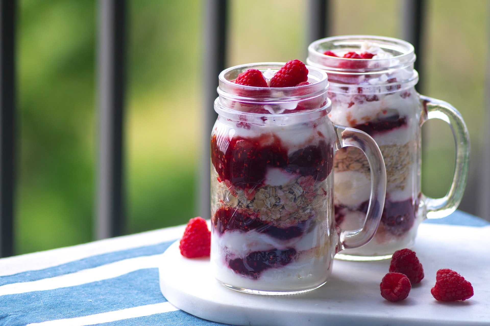

Overnight Oatmeal

I love making up a few of these at a time for a quick, on-and-go breakfast. You can use different spices or maple syrup and your favorite berry or fruit
Ingredients
- ⅓ cup milk
- ¼ cup rolled oats
- ¼ cup Greek yogurt
- 2 teaspoons chia seeds
- 2 teaspoons honey
- 1 teaspoon ground cinnamon
- ¼ cup fresh blueberries
Steps
- Combine milk, oats, Greek yogurt, chia seeds, honey, and cinnamon in a 1/2-pint jar with a lid; cover and shake until combined. Remove lid and fold in blueberries. Cover jar with lid.
- Refrigerate oatmeal, 8 hours to overnight.